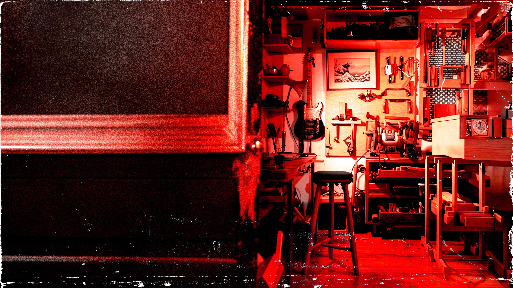

06 Formato de imágenes

Marco rasgado + cover

Silueta roja · #tint-red
Fondo + overlay oscuro
PNG transparente
La caja de herramientas visual de Trastes — Luthería de Autor: paleta, tipografías, botones, efectos e imágenes.
Escala
Hover del primario: se oscurece a --red-hover + reborde y resplandor neón rojo + leve elevación. El fantasma aclara su borde y se eleva.
